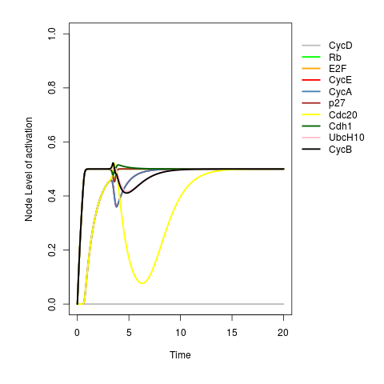
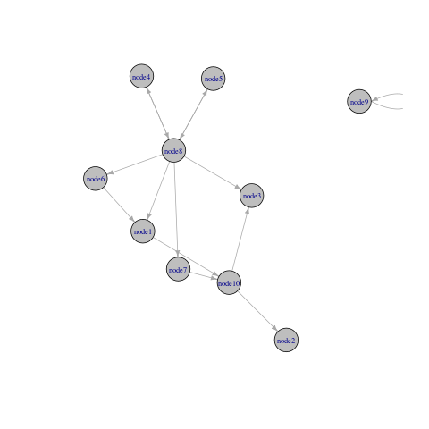

SQUAD R Package installation may require prior instalation of curl and xml packages. Please, check if they are currently installed. On linux system you can execute the following command in the system shell to install both packages, as detailed here.
sudo apt-get install libcurl4-openssl-dev libxml2-dev
To install SQUAD please install devtools library by running the following command on R:
> install.packages(devtools).
Then, install the SQUAD package from the repository using the next command on R:
> library(devtools)
> install_github("caramirezal/SQUAD/SQUAD")
Finally, you can load the library using the standard R form:
> library(SQUAD)
To define a Regulatory Network model using squad formalism it is necessary to define a set of variables nodes and also include regulatory dependencies between them. In squad formalism regulatory dependencies are incorporated to the ordinary differential equations in the form of omega input parameters. The omega input functions are similar to Boolean expressions of the BRN model and can be obtained from them straightforwardly by changing AND, OR, and NOT Boolean operators by the fuzzy logic operators min(), max() and 1−x (where x is the value of the input).
Nodes names and their regulatory dependencies can be given by using the squad format. This format is very similar to BoolNet format, see BoolNet R Package for further references. The next lines show the content of a squad format saved in a standard .txt file called "cartoonNetwork.txt".
targets, factors
A, A
B, min(A,1-C)
C, 1 - max(A,B)
The squad format consist of a text file that includes in its first line the headers “targets, factors”.
The following lines contain the names of the variables and fuzzy logic equations of the omega input
function separated by a comma. So for example, the associated parameter
> ## loading network
> net.sq <- loadNetwork.sq("cartoonNetwork.txt")
> ## Initial state definition
> initialState <- c("A"=0,"B"=1,"C"=0)
> ## running simulation
> squad(net.sq, initialState=initialState, plot= "timeSerie")
The output is shown in the next figure which shows a single trajectory starting
from an initial state = c(0,0,1).
This example also introduces the squad() function. This function allows performing continuous simulations
and will be discussed in more detail in section 5 Running simulations.
The parameter initialState is used to define the initial values of the nodes in the network and plot
parameter set to "timeSerie" tells squad() to return a time serie plot of the simulated trajectory.
As mentioned aboved, BRN are parameters free simple models focused in simulating the dynamic of the network driven by positive or negative (or dual) interactions. In practice, it is usually convenient to start with such a simple approach and then transit to more complex formalisms if needed. The SQUAD R package can be used in combination with BoolNet to automate this task as follows.
We will use here a BRN model available in the BoolNet R package. The model contains key regulators of the mammalian cell cycle.
> data("cellcycle")
> cellcycle
Boolean network with 10 genes
Involved genes:
CycD Rb E2F CycE CycA p27 Cdc20 Cdh1 UbcH10 CycB
Transition functions:
Rb = (! CycA & ! CycB & ! CycD & ! CycE) | (p27 & ! CycB & ! CycD)
E2F = (! Rb & ! CycA & ! CycB) | (p27 & ! Rb & ! CycB)
CycE = (E2F & ! Rb)
CycA = (E2F & ! Rb & ! Cdc20 & ! (Cdh1 & UbcH10)) | (CycA & ! Rb & ! Cdc20 & ! (Cdh1 & UbcH10))
p27 = (! CycD & ! CycE & ! CycA & ! CycB) | (p27 & ! (CycE & CycA) & ! CycB &! CycD)
Cdc20 = CycB
Cdh1 = (! CycA & ! CycB) | (Cdc20) | (p27 & ! CycB)
UbcH10 = ! Cdh1 | (Cdh1 & UbcH10 & (Cdc20 | CycA | CycB))
CycB = ! Cdc20 & ! Cdh1
The cellcycle object belongs to BooleanNetwork class as that defined by the BoolNet R package. Using asContinuous() this object can be automatically transformed to a continuous interpolation. In the next code, cellcyle BooleanNetwork object is transformed to cellcycle.sq squad object.
> ## cellcycle "BooleanNetwork" interpolated to cellcycle.sq
> ## continuous model
> cellcycle.sq <- asContinuous(cellcycle)
>
> ## initial State definition
> initialState <- rep(0,length(cellcycle$genes))
> ## running simulation
>
> squad(cellcycle,
> initialState = initialState,
> plot = "timeSerie",
> timePeriod = 20)

In this example, we started the simulation with all genes equal to 0/OFF. The
parameter timePeriod was used to set virtual time duration in the simulation. From the image, it
can be seen that the network trajectory became stationary at values = 0.5 for all nodes except for cycD
which has a value equal to 0.
For the vast majority of regulatory interactions only information regarding direction and type (positive, negative, or dual) is available. This qualitative information can be represented by graphs or adjacency matrices. An adjacency matrix M representing a network can be defined as square matrix that contains nodes names in both columns and rows. Every entry mi,j takes the values 1, -1, or 0 if there is a positive, negative or no interaction from node i to j, respectively. So defined static representation of a regulatory network is frequently referred as the network topology.
It is very useful to automate the definition of a dynamic BRN model by means of its network topology. SQUAD R package incorporates the graphToModel() function to automate this task. In the following example, a random connectivity matrix is defined using the randomMatrix() function. The output of randomMatrix() is a square matrix R object. The parameter matrixDimension is set up to 10 and defines the number of nodes. The adjacency matrix is then transformed to a BRN model using graphToModel() function.
> ## getting a random connectivity matrix of 10 nodes
> adjMatrix <- randomMatrix(matrixDimension=10)
>
> ## connectivity matrix to BRN model
> net.b <- graphToModel(adjMatrix)
>
> ## plotting the graph
> plotNetworkWiring(net.b)

The figure shows the network topology as defined by the connectivity matrix defined using randomMatrix(). In real cases, adjacency matrices for biological regulatory networks can be obtained from available data bases or by using inference methods from high-throughput expression data.
Then, asContinuous() function can be applied to net.b
BooleanNetwork object to obtain a squad interpolation as shown in the next code lines.
> ## BRN to squad
> net.sq <- asContinuous(net.b)
>
> ## running simulation
> squad(net.sq, initialState = rep(0,length(net.sq$genes)),plot = "timeSerie")
It is noteworthy to say that the modeller can end up with a BRN discrete model or transit to a continuous interpolation depending on the modeling requirements.
Once we have a continuous Regulatory Network (RN) squad object, simulations can be carried out. The squad() function was designed to be a platform for setting simulation parameters, performing simulations, and optionally plotting results. In this section, squad() function is described.